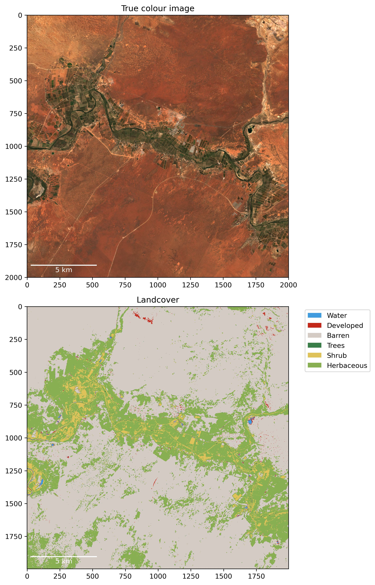

AI for Landcover Classification in Drylands
Inference - Biome 13 - Deserts and Xeric Shrublands.
A convolutional neural network was trained on 26,628 Sentinel-2 samples (10 x 5 x 5 px) from the Deserts and Xeric Shrublands global biome. The neural network has an accuracy of 75% on the global test dataset. The figures below are from a 20 km x 20 km Sentinel-2 image from the Siwa Oasis in Egypt's Western Desert acquired in 2024.
